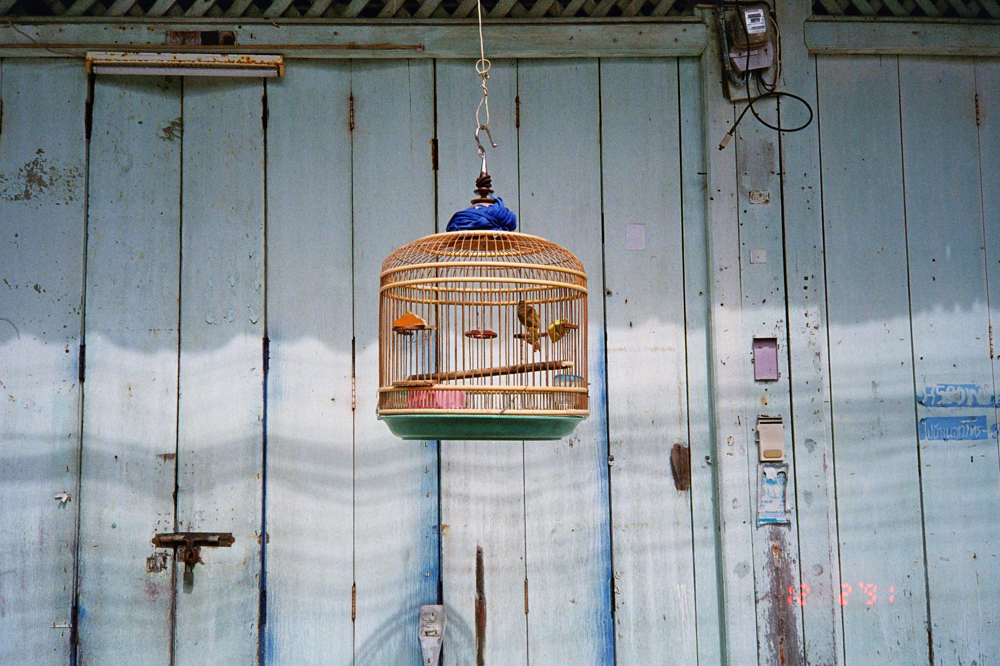

{ récolter } ( traduire ) [ transmettre ]

Un territoire, une organisation, une communauté ne se résument ni à leur forme, ni à leur géographie. Ils se construisent par les relations qui les traversent : les usages qui s'y inventent, les histoires qui s'y transmettent, les cultures qui s'y croisent, le vivant qui les habite.
Ces relations produisent des dynamiques invisibles. Les comprendre est le préalable à toute conception juste.
Relation — n. f. — Ce qui existe non pas dans les choses, mais entre elles : le lien qui façonne un lieu, une culture, une communauté, autant que leur forme.
Pratique
ORMA développe une pratique de recherche située.
Une recherche ancrée dans les réalités du vivant, attentive aux contextes, conçue pour produire des ressources capables de nourrir la compréhension du monde comme la conception des projets.
Le travail débute toujours par une immersion de terrain. Enquêtes, entretiens, observations, archives et recherches documentaires constituent le point de départ de chaque projet. Cette démarche croise les apports de l'histoire, de la sociologie, de l'anthropologie, de la psychologie, de la philosophie, des sciences du vivant et d'autres disciplines selon les contextes. Elle permet de récolter une matière vivante, révélatrice des usages, des histoires, des imaginaires et des dynamiques qui façonnent un territoire, une organisation ou un lieu de vie.
Cette matière se traduit ensuite sous forme de publications, d'archives, de films, de cartographies, d'essais ou de carnet pour enrichir la compréhension du monde. Elle est interprétée, mise en relation et transmise en cadres de lecture, méthodes et ressources directement mobilisables par les équipes de projet afin d'éclairer les décisions de conception, de la cellule familiale à l'urbanisme, en passant par les projets culturels, l'architecture ou les stratégies territoriales.
Les usages, les gestes, les récits, les savoir-faire et les relations deviennent les témoins d'une époque autant que les ressources des projets à venir.
Commanditaires
{{ p.numero }}
{{ p.sousTitre }}
{{ p.contexte }}
{{ p.recolter }}
{{ p.traduire }}
{{ p.transmettre }}
À propos
Les lieux de vie ne sont jamais neutres.
Ils portent les traces des personnes qui les habitent, des gestes qui s'y répètent, des savoir-faire qui s'y transmettent, des usages qui s'y inventent et des cultures qui les façonnent. En retour, ils influencent notre manière d'habiter, de travailler, de nous rencontrer, de transmettre et d'imaginer le monde.
Comprendre cette relation est devenu le fil conducteur d'une pratique située à la croisée de la recherche, du design et de la stratégie.
{{ e.meta }}
{{ e.texte }}
Atelier Craft · Cutwork · MiZa · Veolia · Kelsea Crawford · Le Loft du Canal · Institut Catholique de Paris · Education Populaire chez SOS Racisme · Nathanaël Dorent Architecture · Olivia Lara Owen
contact@ormastudio.space
Paris, France